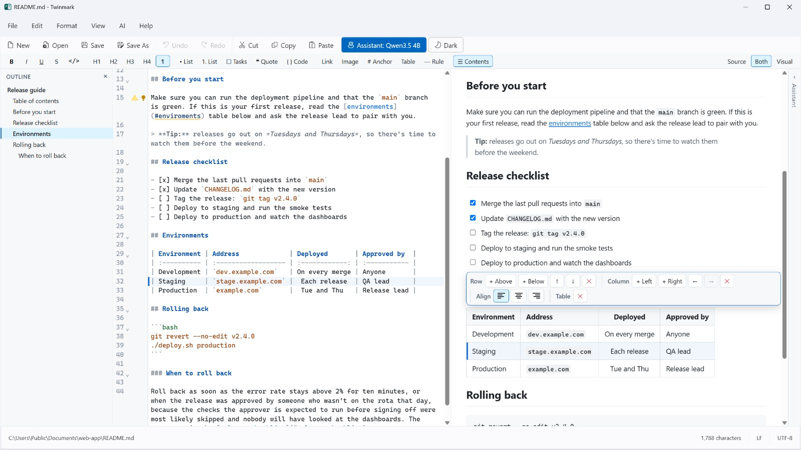
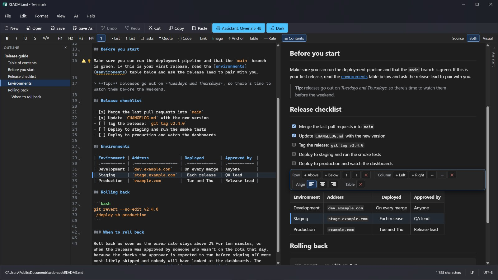

Two panes, in step
The source and a visual editor side by side, or either one on its own. The block you're editing is highlighted in both.
Write the markdown, or the page it becomes, or both side by side. Twinmark keeps the two in step as you type and rewrites only what you change, for documentation that ends up on GitLab and GitHub.
Free trial · Windows 10 (version 1809 or later) and Windows 11, 64-bit · No account needed

**bold**, appears as markdown on the left; a task ticked on the right is
ticked in the markdown.
Two panes, one document
The markdown is the document. Change it as text, or as the finished page, and Twinmark rewrites only the lines you touched, so your spacing, list markers and tables stay just as you wrote them.
What's in 1.0
From the first heading to the export, with checks that know how GitLab and GitHub will show it.
The source and a visual editor side by side, or either one on its own. The block you're editing is highlighted in both.
Add, move and align rows and columns with a toolbar. The markdown stays neatly lined up.
Broken links, headings out of order, missing alt text, hard sentences, and markdown the sites show differently, with fixes.
Shorten, simplify, proofread or review, on your own computer or with your own key. Nothing changes until you accept.
An outline, a command palette, find and replace, templates, and a table of contents that keeps itself up to date.
Version history, recovery of unsaved changes after a crash, and Auto Save if you want it.
HTML, PDF and Word, with your pictures included. Saving keeps each file's encoding and line endings.
Give the visual pane a window of its own on a second screen. Light or dark, and sharp at every scale.
Checked as you write
Twinmark reads your markdown the way GitLab and GitHub do, and tells you when they won't show what you see. Most problems have a fix one click away.

Optional, and on your side
Download a model once and the assistant works offline, with nothing you write leaving your computer. Or use OpenAI or Azure OpenAI with your own key, once you've agreed to it.

Made for Windows
Twinmark follows your Windows theme, or the one you choose, and stays sharp on every monitor.


Private by design
accounts to make. Open a file and start writing.
ads. You buy Twinmark once, after a free trial.
trackers or analytics, in the app or on this website.
The details are in the privacy policy.
Stay tuned · Twinmark 1.1
The next version is taking shape: equations you type as they look, diagrams you change by clicking them, a Files panel, and a find and replace that works in both panes.
Twinmark is in the Microsoft Store with a free trial in which everything works, the AI assistant and the second window included.
Windows 10 (version 1809 or later) and Windows 11, 64-bit.